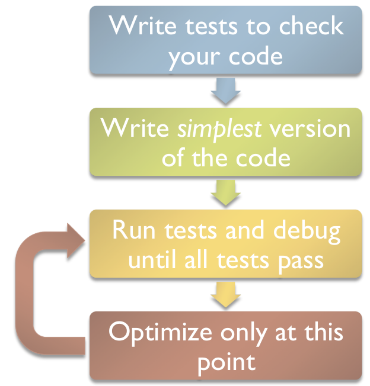

Testing your code#
In this chapter we are going to learn how to check that the code you write is working as expected. This will be achieved with the introduction of testing tools which will help you to formalize and organize your tests, as well as with the definition of new concepts: unit testing and test driven development.
Introduction#
Nobody can write bug-free code on the first try. Believe me on that one, nobody can. Therefore, every programmer constantly needs to test that newly written code is working as expected. Very often, scientists without formal training in computer sciences and programming will test their code “ad-hoc”, i.e. with trial-and-error approaches on an interactive console or with print statements throughout the code. While this is a quick way to get the job done at first sight, it is in fact a dangerous, non-scientific practice. Today and throughout the lecture I will often remind you of a simple rule:
Always write tests for your code.
Oh, sorry, I actually meant to say this louder:
Important
Always write tests for your code. Really.
Now, let’s learn:
why should we write tests?
how should we write tests?
Why testing?#
Scientific code is used to take important decisions#
Scientists are writing highly influencial code. Our climate and weather models are guiding political decisions, and, more recently, epidemiological models were at the core of the decision making process that drove us into lockdown.
As scientists, we always have to provide results which are correct to the best of our knowledge. In recent years, erroneous software code led to several “scandals” in the scientific world. For example, in 2006 scientists had to retract five of their papers after discovering that their results were based on erroneous computations. “As a result of a bug in a Perl script”, other authors retracted a paper in PLoS. In this article from October 2019, Vice reports how a short script that produces different results on different operating systems may have caused widespread errors in peer-reviewed studies.
All these examples tell us an important message: the challenge of (ir)reproducible research can only be tackled with openly tested scientific software.
The requirement of “100% error-free code” announced in my title will of course never be achieved, but we have to do our best to avoid situations like described above. This slide by Pietro Berkes presented at a SciPy tutorial brings it quite well to the point:
{kind=link}
“Trial and error” development practices hide important bugs#
Checking that “the curve looks okay” or that “the relative humidity values seem realistic” is not a quantitative test: it is error prone and possibly wrong. Testing must be achieved in a formal and quantitative way:
are the results of my code providing correct results as provided by an external source or an independent computation?
is my software running under all circumstances, also with missing data?
does my software fail with informative error messages when the input is not compliant to predefined rules?
is my software doing what is announced in the documentation?
Code that worked once might not work a year later#
This is a problem often overseen by scientists: once written and tested “ad-hoc”, a script will be used and sometimes shared with colleagues. However, the same code might provide different results at a later time, as shown in these examples:
a change of computer leads to numerical accuracy errors which didn’t happen before
numpy was updated to a new major version, and a function that worked perfectly now raises a
DeprecationWarningwhen executedthe weather station was updated and suddenly the relative humidity values computed by my code are unrealistic. My code did not warn me about it and I used wrong values to compute the latent energy flux
I optimized my function
clever_compute()which was too slow, and now it doesn’t work anymoreI changed the function
abc()where I found a bug, but now the other functiondfg()does not work anymore
In all these cases, formal tests would have helped to isolate the problems at an early stage and avoid late and tedious debugging. Therefore, tests are sometimes called “regression tests”: once a test is written and works, it serves the purpose to make sure that future changes won’t break things. Tests should be re-run each time something is changed in the code or when third-party packages are updated.
Untested science code is “bad science code”#
You would never use data from an uncalibrated temperature sensor, would you? Scientific code is no different: never trust untested code. Don’t trust tested code either (!), but untested code is much worse. When using new scripts/packages for your work, always check that these come with good tests for the functionality you are using.
Writing tests: a first example#
Assertions and exceptions#
One way to test your code is to write assertions within your scripts and functions. Let’s say we would like to write a function converting degrees Fahrenheit to degrees Celsius:
def f2c(tf):
"""Converts degrees Fahrenheit to degrees Celsius"""
r = (tf - 32) * 5/9
# Check that we provide physically reasonable results
assert r > -273.15
return r
Assert statements are a convenient way to insert debugging assertions into a program. During the process of writing code, they help to check that some variables comply to certain rules you decided are important. Here are some examples of assert statements:
result = 2.
assert result > 0
assert type(result) == float
Asserts are convenient, but they shouldn’t be used too often. Indeed, my example above is a good example of bad code, since it might fail because of bad user input:
f2c(-1000)
---------------------------------------------------------------------------
AssertionError Traceback (most recent call last)
Cell In[3], line 1
----> 1 f2c(-1000)
Cell In[1], line 5, in f2c(tf)
3 r = (tf - 32) * 5/9
4 # Check that we provide physically reasonable results
----> 5 assert r > -273.15
6 return r
AssertionError:
This is not very informative. A much better practice would be:
def f2c(tf):
"""Converts degrees Fahrenheit to degrees Celsius"""
if tf < -459.67:
raise ValueError('Input temperature below absolute zero!')
r = (tf - 32) * 5/9
return r
Assertions in code are similar to debug print() statements filling a script: they help to debug or understand an algorithm, but they are not sustainable and should not replace real, independent tests.
A first independent test#
Now, how should we test our f2c function appropriatly? Well, this should happen in a dedicated script or module testing that the function behaves like expected. A good start is to look for typical conversion table values and see if our function returns the expected values:
assert f2c(9941) == 5505
assert f2c(212) == 100
assert f2c(32) == 0
If the assertions fail it would let us know that something is wrong in our function. These tests, however, are still considered “ad-hoc”: if you type them in the interpreter at the moment you write the function (“trial and error development”) but don’t store them for later, you might break your code later on without noticing. This is why test automation is needed.
Pytest#
pytest is a python package helping you to formalize and run your tests efficiently. It is a command line program recognizing and executing tests on demand as well as a python library providing useful modules helping programmers to write better tests.
Usage#
Let’s start with an example:
Exercise 20
Install the pytest package (i.e. conda install pytest). In your working directory (see the warning about directories below), create a new metutils.py module, which provides the f2c function. In the same directory, create a new test_metutils.py module, which contains a test_f2c function. This function must implement the tests we described above (note: don’t forget to import metutils in the test module!). Now, in a command line environment (not in python!), type:
$ pytest
You should see an output similar to:
============================= test session starts ==============================
platform linux -- Python 3.6.4, pytest-3.4.2, py-1.5.2, pluggy-0.6.0
rootdir: /home/c7071047/ptest, inifile:
collected 1 item
test_metutils.py . [100%]
=========================== 1 passed in 0.02 seconds ===========================
What did pytest just do? It scanned the working directory searching for certain patterns (files and functions starting with test_*) and executed them.
Warning
Pytest does a recursive search of all files and folders in the directory you start the script from. Do not start pytest from your home directory or any directory full of non relevant files! Otherwise it might take a lot of time and reach folders where it should not go, etc.
Exercise 21
Now write a new function in the metutils module called c2f, converting Celsius to Fahrenheit. Write a new test for this function. Then, write a third test function (test_roundtrip_f2c), which tests that for any valid value the “roundtrip” val == f2c(c2f(val)) is true. Run pytest to see that everything is working as expected.
Assertions in pytest#
If you have read carefully you probably noticed that in this section I recommended against heavy use of assert statements in your code. So what about all these assertions in our tests? Well, assert statements in tests executed by pytest are very different: they provide enriched information provided by the pytest package itself.
Exercise 22
Make a test fail, either by altering the original function, or by writing a wrong assert statement. Verify that the pytest log is giving you information about why the test is now failing.
Running pytest from ipython#
It is not necessary to open a terminal to run pytest. You can do so from the ipython interpreter with:
!pytest
============================= test session starts ==============================
platform darwin -- Python 3.12.4, pytest-8.2.2, pluggy-1.5.0
Matplotlib: 3.8.4
Freetype: 2.12.1
rootdir: /Users/uu23343/Library/CloudStorage/Dropbox/HomeDocs/git/scientific_programming/book/week_06
plugins: mpl-0.17.0, anyio-4.4.0
collecting ...
collected 0 items
============================ no tests ran in 0.18s =============================
Software testing methods#
You might be surprised to learn that there is a broad literature dedicated to software testing only. Authors and researchers agreed upon certain semantics and standards, and we are going to introduce a few of these concepts here.
Unit tests#
Unit tests have the purpose to test the smallest possible units of source code, i.e. single functions in python. Unit tests have the advantage to be highly specialized and are often written together or before the actual function from which they are testing the functionality.
Unit tests are useful because they encourage programmers to write small “code units” (functions) instead of monolithic code. Let’s make an example: say you’d like to write a function which computes the dewpoint temperature from temperatures (in Fahrenheit) and relative humidity (in %). This function will first convert °F to °C (a first code unit), then the dewpoint temperature in °C (another unit), and convert back to °F (a third unit). A good way to write this tool would be to write the three smallest functions first and test them independently.
Integration tests#
Integration tests check that the units are working as a group. To keep the dewpoint example from above, an integration test would be a test that checks that the entire computation chain works as expected.

Verification tests#
Verification is the process of checking that a software system meets the specifications. Software specification is an important concept in engineering and commercial applications, where software is built to meet the customer’s needs.
In science, the verification tests would check that a function really meets the documented features. For example: does my function really work with arrays of any dimension (as announced in the documentation) or only with scalars? Does my function really fail for relative humidity values below 0%?
And so on…#
If you spend some time on the wikipedia articles linked above you will see that there is a large variety of concepts behind software testing practices. For us scientists these concepts are only partly applicable because often we do not have to meet customer requirements the same way software developers do. For now we will stick with these three concepts and try to apply them as thoroughly as possible.
Designing and writing tests#
At the beginning you will probably find writing tests hard and confusing. “What should I test and how?” are the questions you will have to ask yourself very often.
In the course of the semester this task will become easier and easier thanks to an influential testing philosophy: test-driven development (TDD). In TDD, one writes the test before coding the actual feature one would like to implement. Together with the function’s documentation, this encourages to thoroughly think about the design of a function’s interface before writing it.
{kind=link}
Chart by Pietro Berkes
The “AAA” concept#
In principle all unit tests follow a very similar structure, the Arrange-Act-Assert workflow:
Arrange: preparation of the data and objects needed for the test. For example, for the
f2ctest we needed to gather the data in °F (to be converted) and °C (to be compared to). This step is the most complicated and can sometimes occupy most of the test functionAct: execute the test. Basically a call to the targeted function using the input data we created in the previous step. Usually one line of code.
Assert: last step of a unit test application. Check and verify that the returned result is equal (or close to) the expected results.
Testing for equality#
This is the most obvious kind of test and the one we used above. Following the AAA structure:
# Arrange
tf = 212
expected = 100
# Act
result = f2c(212)
# Assert
assert result == expected
Testing for numpy arrays#
In most scientific applications, exact solutions cannot be guaranteed (one reason is floating point accuracy as we will learn later in the course). Therefore, numpy comes with several handy testing functions. We first need to make our function a little more flexible:
import numpy as np
# Make f2c numpy friendly
def f2c(tf):
"""Converts degrees Fahrenheit to degrees Celsius.
Works with numpy arrays as well as with scalars.
"""
if np.any(tf < -459.67):
raise ValueError('Input temperature below absolute zero!')
r = (tf - 32) * 5/9
return r
And now the test:
# Arrange
tf = np.array([32, 212, 9941])
expected = np.array([0, 100, 5505])
# Act
result = f2c(tf)
# Assert
np.testing.assert_allclose(result, expected)
Other very useful assert functions are listed in the numpy documentation.
Testing the validity of the output#
# Arrange
tf = np.array([32, 212, 9941])
# Act
result = f2c(tf)
# Assert
assert np.all(~np.isnan(result))
Testing the interface of a function#
These kind of tests verify that a function complies with the documentation. The focus is not necessarily the result, but also the type of the result:
# Arrange
tf = np.array([32, 212, 9941])
# Act
result = f2c(tf)
# Assert
assert type(tf) == type(result)
assert len(tf) == len(result)
# Arrange
tf = 32.
# Act
result = f2c(tf)
# Assert
assert type(tf) == type(result)
Testing that a function raises exceptions#
These tests are also testing the behavior of a function rather than its input. They are extremely important for libraries like numpy or matplotlib:
import pytest
with pytest.raises(ValueError):
f2c(-3000)
Or, even more precise:
with pytest.raises(ValueError, match="Input temperature below absolute zero"):
f2c(-3000)
Final remarks#
Writing tests is hard. Programmers often spend as much time writing tests as writing actual code. Scientists cannot spend that much time writing tests of course, but I strongly believe that learning to write tests is a very good investment in the long term.
I often hear the question: “In science we are programming new models and equations, we can’t test for that”. This is only partly true, and should not refrain you from writing unit tests. In particular, automated tests that check that data types are conserved, that a function returns valid values, or that a function simply runs are already much better than no test at all.
Some parts of the code are really hard to test. For example:
data Input/Output (how do I know that I read the data correctly?)
model applied to real-case situations with unknown theoretical outcome
graphical output
For these cases (and other issues such as automated testing and continuous integration) we might get back to the topic in a second testing chapter at the end of the semester (if time permits).
Take home points#
write tests!
tests are a safeguard against scientific mistakes and future bugs
tests functions are written in a dedicated module and follow a simple convention:
test_*. They are run automatically withpytest“unit testing” is the practice of testing the smallest units of the code first. Unit tests help to organize the code.
tests can check for function output, behavior, and errors
testing is hard
write tests! Really. Write tests as you code, and you will be a better programmer and scientist.